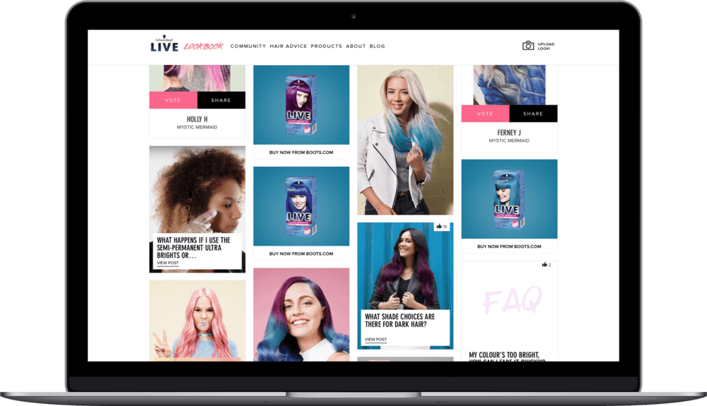

The Brief
The brief had four key objectives:
-
Providing a unique selling point for LIVE amongst competition.
-
Increasing the brand’s appeal to a broader audience (a more trend-focussed consumer) while still satisfying the needs of the current users.
-
Inspiring consumers to frequently colour their hair and get creative.
-
Provide a valuable experience for consumers, encouraging repeat engagements with an owned brand platform.
The Platform
Key features of the platform included:
- A quick-selector tool for consumers to use to quickly direct them to relevant content.
- A Hair Advice section, presenting How-Tos, FAQs and multiple ways for consumers to speak directly with the brand for personalised advice.
- Updated content tagging to aid findability.
- A Community gallery for inspiration, filled with content generated by the LIVE fan-base.

The Impact
The LIVE Lookbook provides consumers with tips, tricks and lust-have looks to try at home… and it’s continuing to grow its encyclopedia of hair colour advice to empower consumers to become better at-home hair colourists. Highlights since its October launch
include:
Increased reach to 18-35 year-olds
A 116% increase in sessions from 18-35 year-olds, compared to the same period in the previous campaign.
Increased utility
A conversion rate of 3.5% on use of the homepage “quick selector”, directing users to filtered hair advice content according to their needs.
Increased relevancy
A 35% decrease in bounce rate, a 282% increase in sessions and a 151% increase in returning visitors, compared to the same period in the previous campaign.